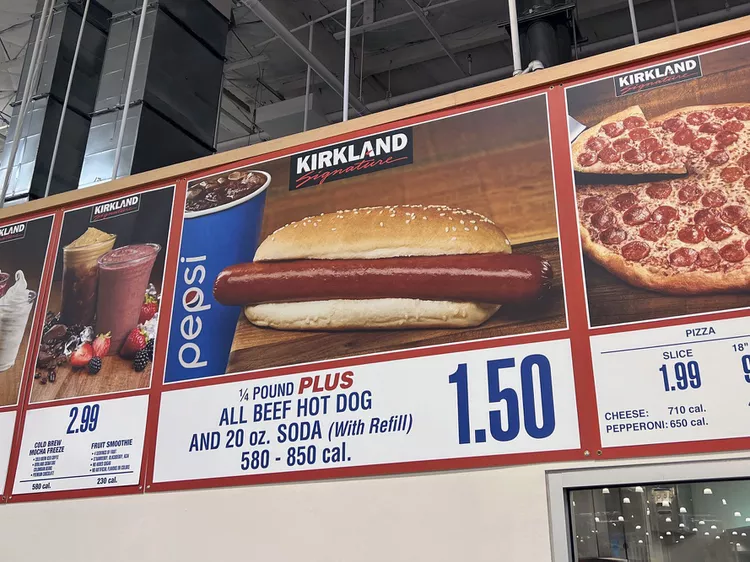

Home
Odin Recipes
Hotdog

Description
The classing american hotdog (no dog inside) is a staple food at sporting events and can be easily enjoyed at home.
Ingredients
- 8 beef hotdogs
- 8 hotdog buns
Steps
- Gather ingredients.
- Fill a pot with water and bring to boil.
- Place hotdogs in boiling water for 3-5 minutes.
- Turn of water and remove hot dogs from pot. Place inside hot dog buns and season with choice of toppings.
- Enjoy!